TENTANG TULUNGAGUNG
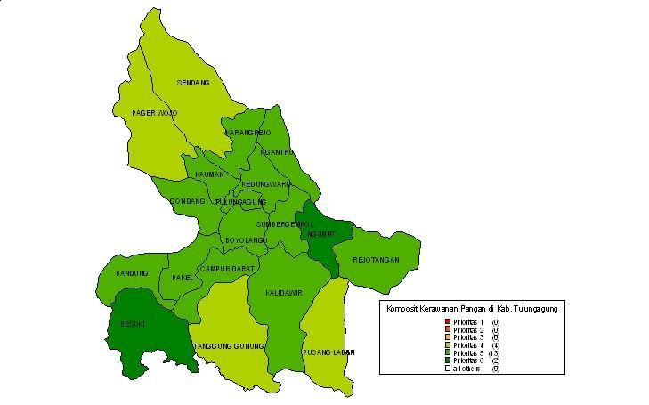
Dikenal dengan sebutan Kota penghasil marmer terbesar di Indonesia, Kabupaten Tulungagung terletak 154 Km arah barat daya Kota Surabaya.
Menurut sejarahnya, nama Tulungagung didapat karena adanya sumber air yang besar pada waktu itu. Dalam bahasa Kawi, Tulung adalah mata air. Sedangkan, agung adalah besar.
Tulungagung terletak di ketinggian 85 Km dari atas permukaan laut. Pada bagian barat merupakan daerah pegunungan, bagian dari pegunungan Wilis-Liman. Pada bagian tengah, Tulungagung merupakan dataran rendah, sedangkan di bagian selatan merupakan pegunungan, bagian dari pegunungan Kidul.
Dilihat dari keadaan alamnya, Tulungagung memiliki beberapa potensi alam yang bisa dimanfaatkan sebagai obyek wisata. Selain dari industri marmer terbesar berpusat di sini, Tulungagung juga memiliki beberapa sentra industri kecil dan menengah.
Letak Geografis
Utara: Kabupaten Kediri
Selatan: Samudera Hindia
Timur: Kabupaten Blitar
Barat: Kabupaten Trenggalek
BUDAYA
1) Reog Kendang
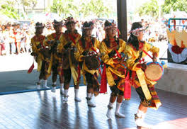Selain di ponorogo di Tulungagung juga tedapat reog, perbedaannya terletak pada alat yang dipakai. Dimana reog Tulungagung menggunakan gendang untuk irama musiknya selain juga untuk sarana penari.
2) Jaranan
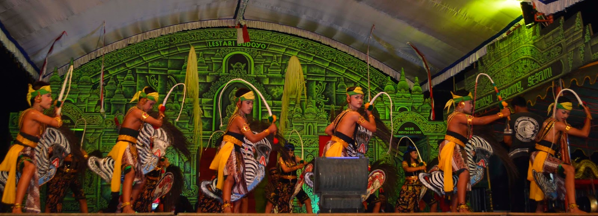Tari Jaranan adalah kesenian tari tradisional yang dimainkan oleh para penari dengan menaiki kuda tiruan yang tebuat dari anyaman bambu. Selain kaya akan nilai seni dan budaya, tarian ini juga sangat kental akan kesan magis dan nilai spiritual.
3) Manten Kucing
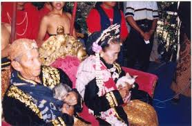Upacara manten kucing di lakukan oleh masyarakat di kecamatan campurdarat upacara ini bertujuan untuk mengundang hujan. Upacara manten kucing ini menyertakan sepasang muda mudi yang berpakaian seperti pengantin sambi mengendong sepasang kucing yang didandani seperti pengantin juga.
4) Tiban
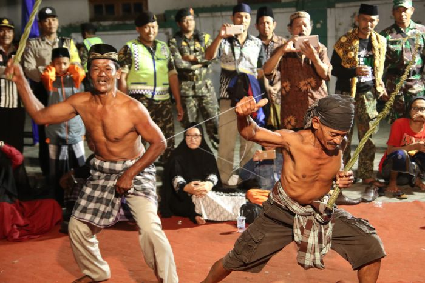Tiban merupakan sebuah pertunjukan tari yang merupakan tradisi turun temurun masyarakat Tulungagung yang bertujuan untuk meminta hujan. Peserta tiban hanya mengenakan celana dan tidak diijinkan mengenakan baju atas. Mereka memakai pecut(sebagai alat pemukul) yang dibuat dari ranting pohon aren, dan yang menarik mereka bisa membuat pecut yang akan dipakai sendiri untuk bertanding.
PARIWISATA
1) Alun - Alun Tulungagung
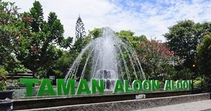 Tempat wisata pertama yang dapat dikunjungi jika pergi ke Tulungagung adalah Taman Aloon - Aloon.
Aktivitas di Taman Aloon - aloon ini cukup beragam, sekedar santai,bisa juga untuk olah raga, bermain, belajar atau pun berlatih sesuatu. Aktivitas yang beragam ini tentu ada karena disediakannya berbagai fasilitas-fasilitas penunjang.
2) Pantai Kedung Tumpang
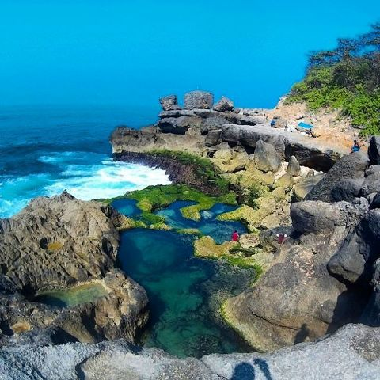Wisata pantai yang bisa menjadi rekomendasi berlibur kalian yaitu Pantai Kedung Tumpang. Pantai ini terletak di Kecamatan Kalidawir Kabupaten Tulungagung. Pantai ini memiliki pemandangan yang indah dengan warna air yang beragam warna.
3) Ranu Gumbolo
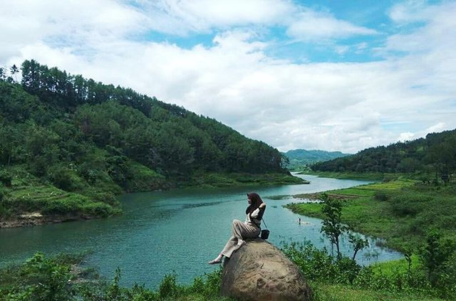
Selama ini, Ranu Kumbolo dikenal sebagai wisata alam di jalur pendakian Gunung Semeru yang berada di perbatasan Malang dan Lumajang, Jawa Timur. Keindahan danau di lereng Gunung Semeru ini membuat Ranu Kumbolo begitu populer, khususnya di kalangan pendaki.
Namun, tahukah kamu jika Tulungagung juga memiliki pesona danau yang tak kalah cantik? Ranu Gumbolo di Desa Wonorejo, Pagerwojo kerap disebut sebagai Ranu Kumbolonya Tulungagung. Kemiripan lanskap dan pemandangan yang ditawarkan menjadikan Ranu Gumbolo sebagai salah satu tempat favorit wisatawan lokal.
4) Gunung Budheg
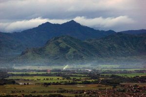Gunung Budheg atau biasa dikenal dengan nama Gunung Cikrak ini adalah salah satu gunung atau bukit yang mempunyai ketinggian sekitar 585 mdpl dan terletak di Desa Boyolangu, Kecamatan Boyolangu, Kabupaten Tulungagung. Gunung Budheg bisa menjadi lokasi atau tempat untuk latihan bagi para pendaki pemula untuk melakukan pemanasan.
KULINER
1) Ayam Lodho
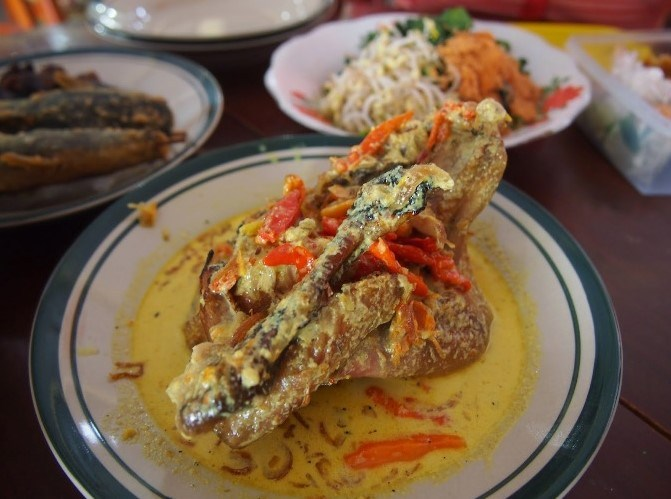Tidak jauh berbeda dengan opor ayam, makanan khas nasi lodho ini adalah pada sajian ayamnya yang dipanggang terlebih dahulu agar aroma ayam lebih terasa dan menghasilkan rasa yang enak dan lezat tentunya. Biasanya sajinan makanan ini ditemani dengan longtong, ketupat ataupun nasi putih.
2) Sompil
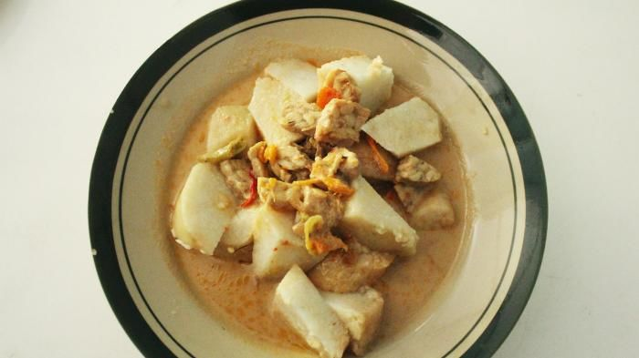Sompil merupakan sejenis lontong sayur khas Tulungagung. Kuliner ini disajikan bersama irisan lontong dan tambahan lontong. Biasanya, sompil juga disajikan dengan tambahan topping bumbu kedelai atau peyek.
3) Sate & Gule Kambing
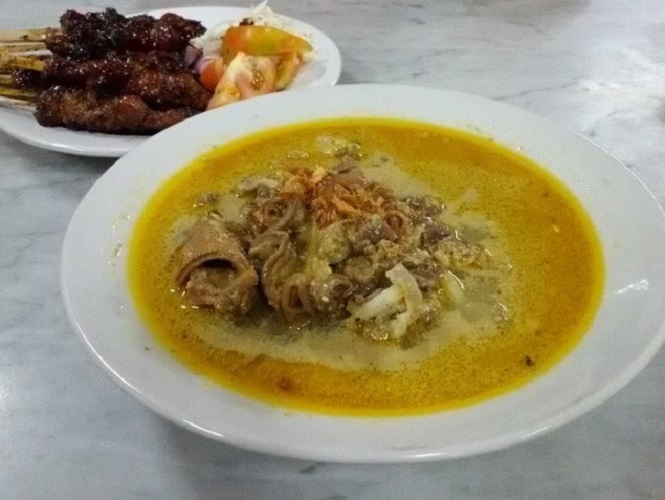 Makanan yang satu ini memang sudah banyak di daerah-daerah lain di Indonesia. Tetapi sate Tulungagung ini berbeda dengan sate-sate dari daerah lain. Sate ini terdiri dari sate kambing dengan racikan bumbunya yang lebih meresap hingga membuat gurih.
Yang membuat khas dan beda daripada sate-sate yang lain yaitu dari proses pembakarannya. Sate kambing ini pada saat dibakar dicelupkan dalam kuah gulai dan menjadikan rasanya yang khas Tulungagung.
4) Kue Sagon
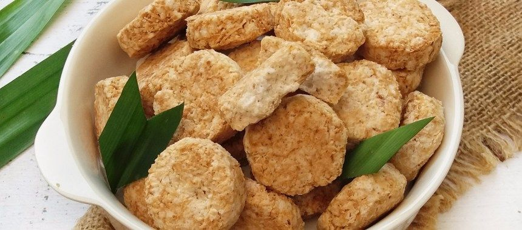Kue sagon ini merupakan camilan khas Tulungagung yang terbuat dari kelapa, tepung sagu atau tepung kanji, serta tepung ketan. Diberi nama Kue Sagon karena kue ini terbuat dari tepung sagu.